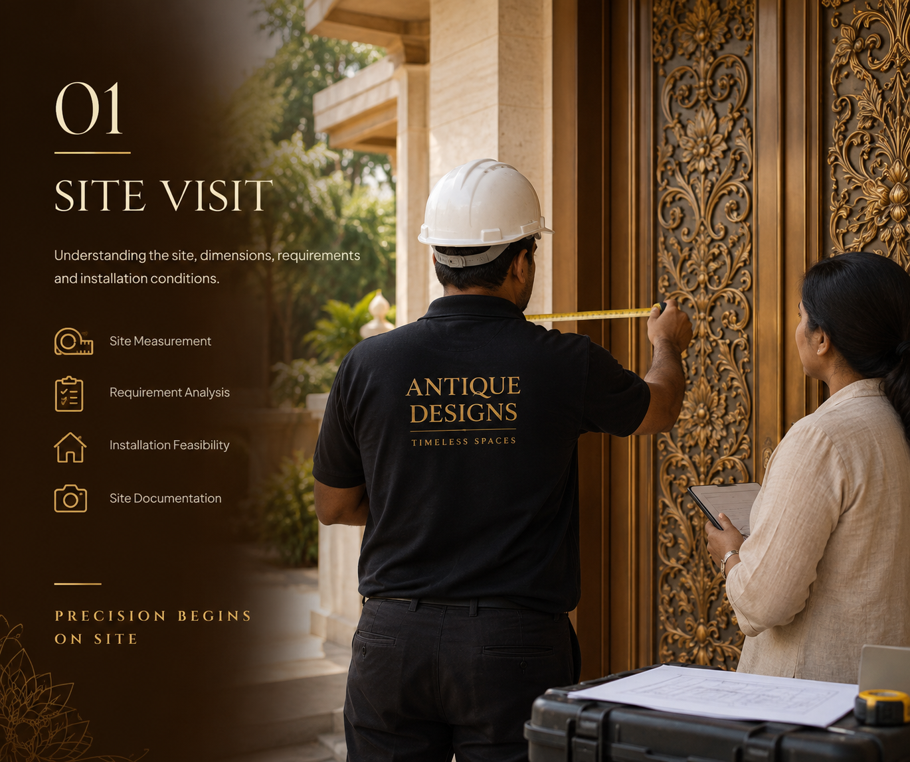

01

🔍 Tap to Expand
Step 01
01 — SITE VISIT
Understanding the site, dimensions, requirements and installation conditions.
Our technical experts conduct a comprehensive on-site survey to take exact millimeter dimensions, assess architectural structural conditions, review wall and floor load capacities, and understand specific installation prerequisites.
- Precision Millimeter Measuring
- Structural & Load Verification
- Vastu Alignment Assessment
- Installation Environment Study